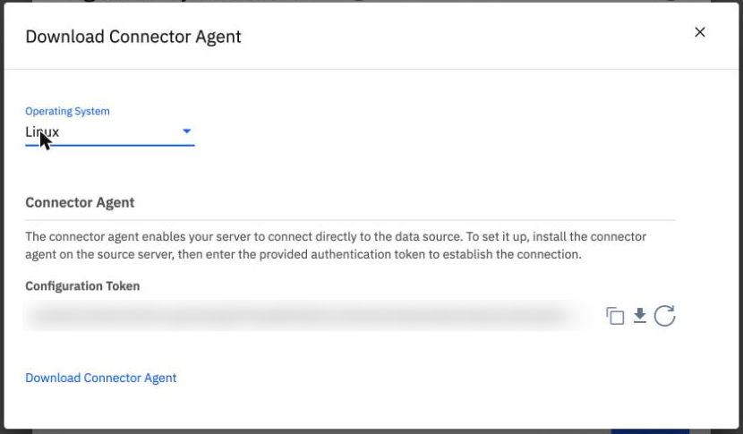
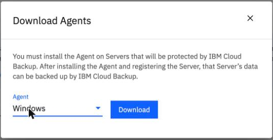
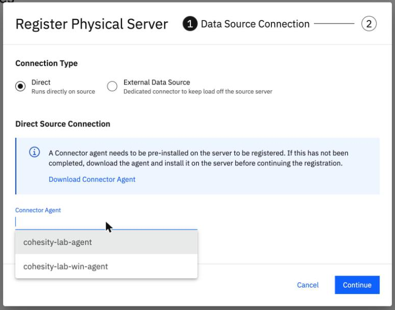

The Connector Agent on Linux and Windows
By the end you can say what the Connector Agent replaces, follow its install and claim on Linux and Windows, and read the error that a wrong platform name gives.
Northgate Freight is a made-up company. Its Linux server ng-app-01 and its Windows server ng-win-01 each get their own Connector Agent, so Northgate builds no connector server for them.
Every number and message in this unit comes from runs in our lab. Server names, addresses and the connection name were changed to made-up Northgate values, and the registration token is blurred in the screenshots.
What the Connector Agent replaces
The Connector Agent is a small program on the source host. It opens a direct connection to the service and replaces the connector server for that host. You still install the normal backup agent. IBM's page says it needs outbound TCP 443, 29991 (broker) and 11117 (bridge).
What does the Connector Agent replace?
Show the answer
It replaces the connector server for that host. You still install the backup agent on the host. The agent is one program per host, so each protected host needs one, while a connector server serves many hosts.
Which outbound ports does IBM say the Connector Agent needs?
Show the answer
443, 29991 (broker) and 11117 (bridge), with 1 vCPU and 512 MB per about 100 MB/s. 50051 and 59999 are the ports the Linux backup agent listened on in our lab.
Install and claim the agent on Linux
Run each command in turn. The output is what our lab returned. The installer file was copied to the server and installed with chmod +x and sudo /tmp/connector_agent_installer -- --install -y; the -y skips the "install? [y/N]" question.
curl -s -o connector_agent_installer "https://$GUID.eu-de.backup-recovery.cloud.ibm.com/v2/connector-agents/download/kLinux" -H "Authorization: Bearer $TOK" -H "X-IBM-Tenant-ID: $T"
HTTP 200, 28.6 MB, a self-extracting script ("Makeself 2.2.0").
Valid platforms: kLinux, kWindows.
ssh vpcuser@10.0.0.10 'sudo /opt/connector_agent/bin/connector_agent.sh status; sudo ss -ltn | grep 8080'
connector_agent_exec is running ... and healthy.
It listens on 127.0.0.1:8080 only.
jq -nc --rawfile t claim.tok '{registrationToken:($t|rtrimstr("\n")),connectionName:"ng-agent",joinExistingConnection:false}' | ssh vpcuser@10.0.0.10 'curl -s -i -X POST -H "Content-Type: application/json" -d @- http://localhost:8080/v1/connector-agents/registration'
HTTP/1.1 204 No Content X-Registration-Status: registered
The token came from the CLI. It is a secret: do not print it.
ibmcloud backup-recovery connector-agent list --tenant-id $T --xibm-tenant-id $T --output json
{"connectorAgents":[{"connectionId":"<CONNECTION_ID>","connectionName":"ng-agent","connectivityStatus":{"isConnected":true,...},"softwareVersion":"7.3.12_release-20260713_2e7241a2"}]}
Both flags are needed.
Windows works the same way, with different installers and commands. In our lab:
Linux Windows Platform name kLinux kWindows Installer 28.6 MB 75.1 MB Installed to /opt/connector_agent C:\Program Files\ConnectorAgent Listens on 127.0.0.1:8080 only 127.0.0.1:8080 only Claim POST to the local port POST to the local port Result 204, registered 204 registered
HTTP 400 on the download
Northgate calls the download API for the Connector Agent installer with the platform written as Linux. This is what came back in our lab.
GET /v2/connector-agents/download/Linux HTTP 400, "platform in path should be one of [kLinux kWindows]"
What went wrong?
Show the answer
The message lists the valid names: kLinux and kWindows. With kLinux the same call returned HTTP 200 and a 28.6 MB self-extracting script.
Would the lower-case linux have worked?
Show the answer
We tested both linux and Linux. Both gave HTTP 400 with the same message.
Find the downloads and the agents
These screens come from the BRS console in our lab. The console downloads the installers, but it has no step for the claim: the agent's only interface is the local port, so the claim is the curl POST you ran in step 2. Click where you would click. After two misses the right place is marked.

Northgate chose Direct and clicked Download Connector Agent. Where do you switch between Linux and Windows?
Show where
Right: the Operating System list, Linux or Windows. The dialog also has the Configuration Token, with copy, download and refresh buttons. It is the same kind of token that the CLI command gives.

This is the backup agent download, with Agent set to Windows. Linux has a Type list here. What is left for Windows?
Show where
Right: only the Download button. On Linux the Type list offers Script Installer, RPM, Debian, Suse RPM and PowerPC RPM. The Windows installer was 21.9 MB.

Both agents are claimed and you start a Direct registration. Click the agent for the Windows server.
Show where
Right: the second name, the Windows agent. Reload the page first if the list looks empty: a dialog left open from before the claim showed an empty list in our lab. System > Data Source Connections does not list a Connector Agent's connection; it shows only the connector server's.
Three questions
Review from unit 2.1. rpm -Uvh of the backup agent stops with "Failed dependencies: lsof is needed". What do you do?
Show the answer
In our lab we installed nfs-utils, lvm2, lsof and wget with dnf, then ran rpm again.
How do you claim a Connector Agent that is installed on a server?
Show the answer
The console has no claim step. The agent listens on 127.0.0.1:8080 only. A good claim returns 204 and X-Registration-Status: registered.
You call the Connector Agent download API with the platform Linux. What do you get?
Show the answer
The message was "platform in path should be one of [kLinux kWindows]".
You can install and claim a Connector Agent
The Connector Agent replaces the connector server for its own host, and you still install the backup agent. The platform names are kLinux and kWindows. The claim is a POST to 127.0.0.1:8080 on the server: the console has no step for it.